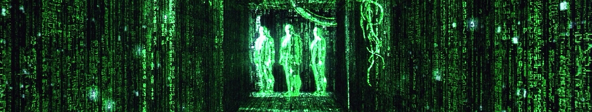
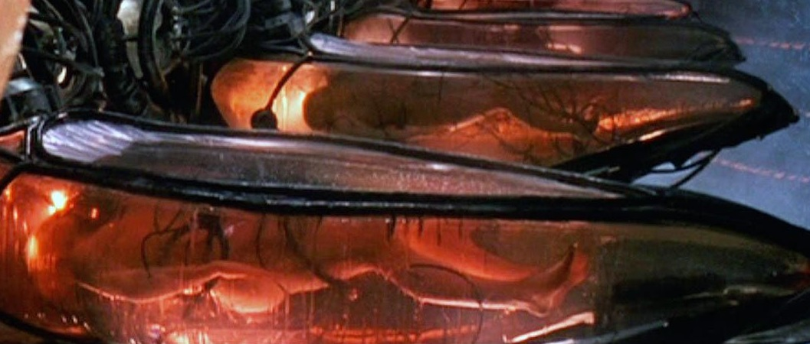
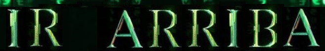

poner nombre y apellidos al principio de la página, ver nombre de la index.html
UNIVERSO MATRIX

Bienvenido a The Matrix
Donde toda tu realidad son señales eléctricas interpretadas por tu cerebro
lo que crees que es el mundo real es un programa informático que controla tu mente
estás en una prisión que no puedes ver, tocar, ni sentir
las máquinas han hackeado tu cerebro y te han covertido en una pila

CONOCE LAS ÚLTIMAS NOVEDADES
SOBRE LA ÚLTIMA PELÍCULA DE MATRIX
T H E M A T R I X
- Fecha de estreno: 9 de julio de 1999
- Duración: 1 hora y 36 minutos
- Dirigida por: Larry & Andy Wachowski
- Presupuesto de rodaje: 63 millones de dólares
- Recaudación: 464 millones de dólares
T H E M A T R I X R E L O A D E D
- Fecha de estreno: 9 de mayo de 2003
- Duración: 1 hora y 38 minutos
- Dirigida por: Larry & Andy Wachowski
- Presupuesto de rodaje: 150 millones de dólares
- Recaudación: 829 millones de dólares
T H E A N I M A T R I X
(9 cortos de animación)
- Fecha de estreno: 3 de junio de 2003
- Duración: 1 hora y 42 minutos
- Dirigida por: Kōji Morimoto
- Presupuesto invertido: No disponible
- Recaudación: No disponible
T H E M A T R I X R E V O L U T I O N S
- Fecha de estreno: 5 de noviembre de 2003
- Duración: 1 hora y 29 minutos
- Dirigida por: Larry & Andy Wachowski
- Presupuesto de rodaje: 150 millones de dólares
- Recaudación: 427 millones de dólares
T H E M A T R I X R E S U R R E C T I O N S
- Fecha de estreno: 22 de diciembre de 2021
- Duración: 1 hora y 47 minutos
- Dirigida por: Lana Wachowski (antes Larry Wachowski)
- Presupuesto de rodaje: 363 millones de dólares
- Recaudación: sdsdsds
